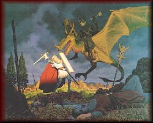
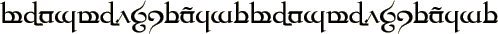

Links
Bill
Rowe's Nowhere Page
The
J.R.R. Tolkien Information Page
A
Concise Listing of Tolkien Books
Tolkien
My
Elendor and J.R.R. Tolkien Page
The
Eleanor House: Tolkien Index
A
Tribute to J.R.R. Tolkien
The
Hobbit Himself
The
Tolkien Collector Resources
The
Tolkien Collector Resources - Animation Cels
The
Hobbit
The
Lord of the Rings/The Hobbit
JRR
Tolkien
News Groups
alt.fan.tolkien
rec.arts.books.tolkien